Planificar un viaje en familia nunca es tan simple como parece. Se quiere que los niños terminen el día agotados de tanto jugar y descubrir cosas nuevas, pero también se sueña con esas tardes lentas, un buen plato en la mesa y cero dolores de cabeza de logística. Nosotros no somos papás, pero cada semana recibimos familias que llegan buscando exactamente eso — y sabemos que organizar cada detalle del viaje es una de las partes más pesadas cuando se viaja con niños. Por eso armamos esta guía.
Somos Dany y Richard: orgullosamente pereiranos, viajeros y súper anfitriones en Airbnb. Escribimos esto desde el cariño que le tenemos a nuestra tierra —el Eje Cafetero— y desde las rutas que hemos recorrido una y otra vez, primero como turistas curiosos y hoy, como esos amigos a los que siempre les piden consejos de viaje. Si alguna vez han soñado con oler café recién trillado apenas se bajan del carro, caminar entre palmas que casi tocan el cielo, o sentarse a disfrutar un rico desayuno con las montañas de fondo, este itinerario de 3 noches está pensado para ustedes.
Aquí les dejamos el mapa completo de nuestro parche favorito de tres noches en familia:
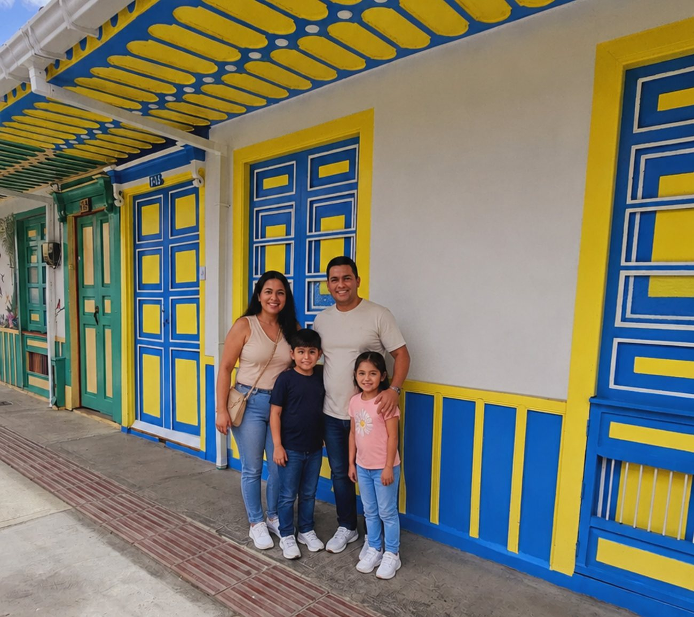
Día 1: Bienvenida, tarde en el lago y cena con vista
Por lo general, los check-in en la zona rondan las 3:00 PM. Si viajaron por carretera y el trayecto fue largo, la primera tarde debe estar pensada para tomarse las cosas con calma — nada de planes que impliquen mucho desplazamiento.
Por eso sugerimos algo cerca de la ciudad. Nuestra primera recomendación es el Lago La Pradera, a solo 8 minutos en auto desde el sector de Dosquebradas. Es ideal si viajan con niños: cuenta con senderos ecológicos, zonas de juegos infantiles y hasta botes de pedal para remar en familia por el lago central. Dentro del parque van a encontrar diferentes casetas que venden comida local, helados y bebidas frescas — perfecto para un snack de media tarde antes de seguir.
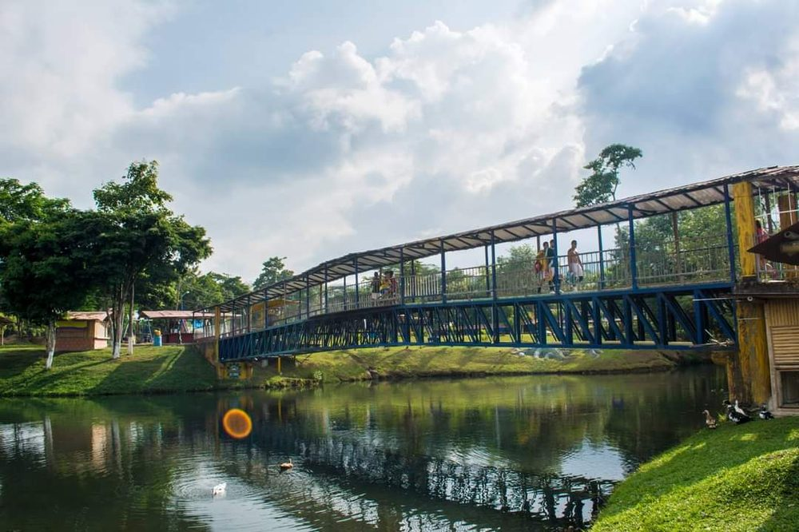
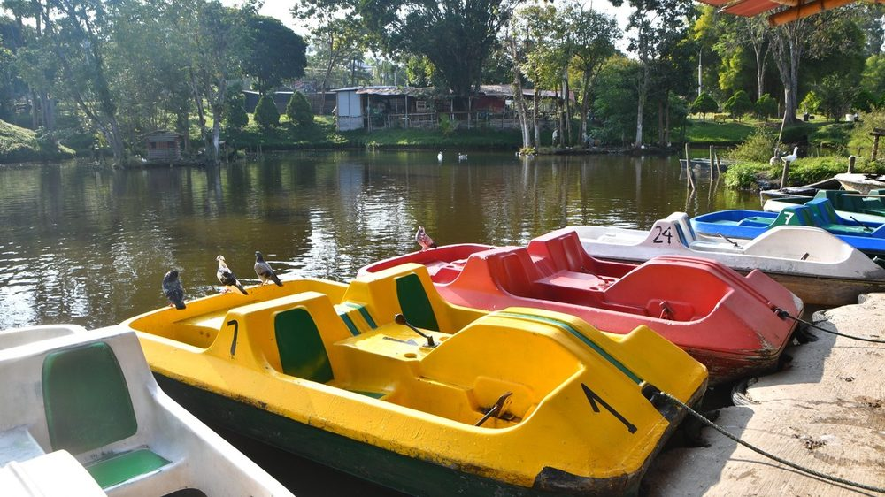
Y para la noche, ¿qué mejor que una cena con vista a la ciudad? A unos 20 minutos en auto, por la variante Romelia - El Pollo, está El Parche Picnic, un restaurante campestre al aire libre con una de las vistas nocturnas más bonitas de todo Pereira. Tiene zona de juegos segura para que los niños se entretengan mientras llega la comida, y un menú con carnes a la parrilla, hamburguesas y opciones para todos los gustos.
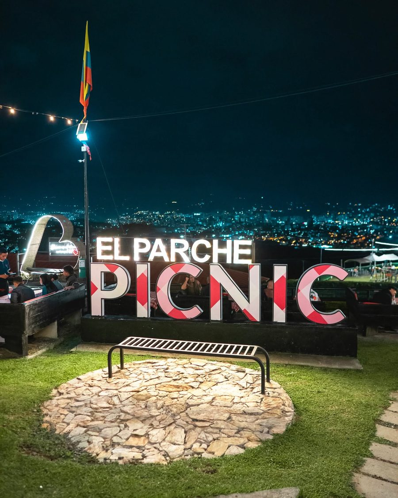
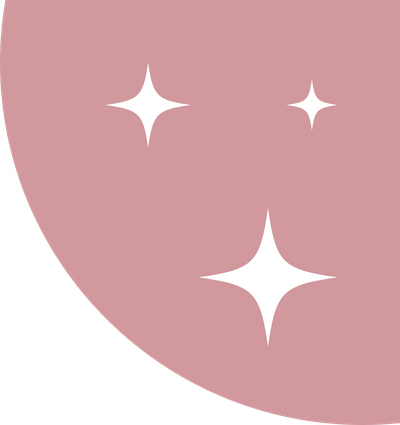
Día 2: Palmas gigantes de Cocora y calles de colores en Salento
Después de la primera tarde tranquila, el segundo día es para la aventura de naturaleza más emblemática de Colombia: el Valle de Cocora y el colorido pueblo de Salento. Nuestra recomendación es salir mínimo a las 7:00 AM, y si pueden, hacerlo entre semana. Así evitan la congestión en la vía y caminan por el valle casi en soledad, con la niebla de la mañana todavía enredada entre las palmas de cera de 60 metros de altura y el canto de los pájaros como única compañía.
Si viajan con niños pequeños o bebés, mejor olvídense de la caminata circular larga — puede ser bastante exigente—. Elijan el sendero lineal corto de la finca privada (6 km ida y vuelta): no es un camino plano, pero sí es mucho más corto y llevadero que el circuito grande, ideal para que los niños lo disfruten sin agotarse de más.
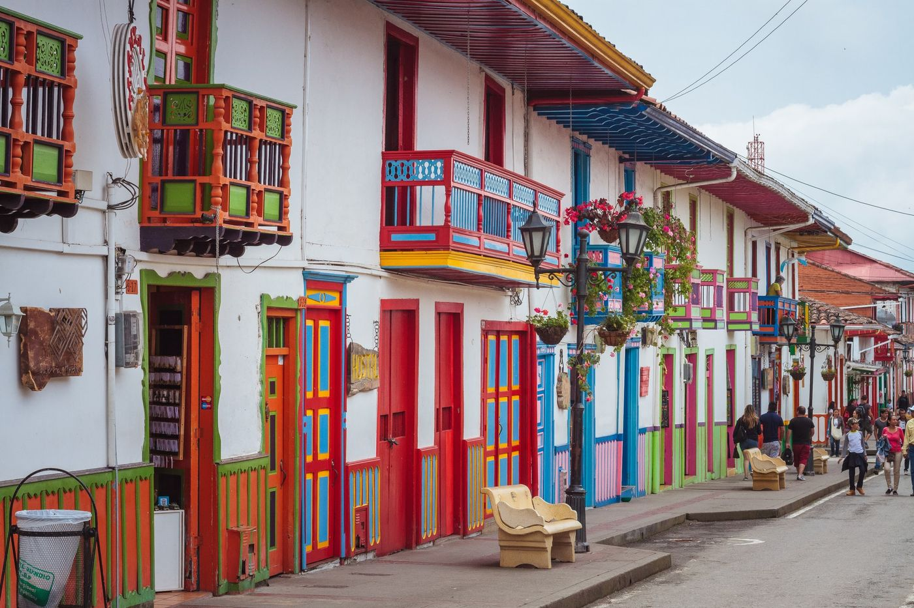
Después de la caminata, bajen hasta el casco urbano de Salento para almorzar. El plato obligado es una trucha arcoíris —al ajillo o gratinada— servida sobre un patacón crujiente gigante. Luego, caminen sin afán por la Calle Real, dejándose sorprender por las fachadas coloniales pintadas en colores vibrantes, prueben un helado de paila artesanal, y aparten un rato para las tiendas de artesanías: siempre hay algo hecho a mano que termina siendo el mejor recuerdo del viaje.
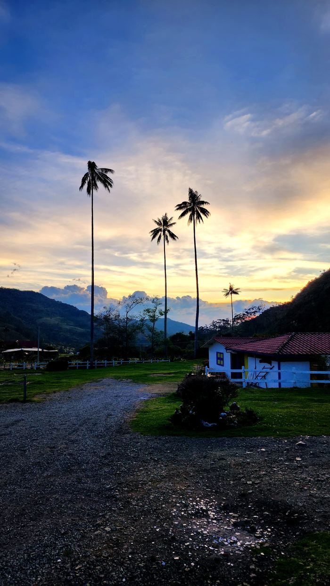
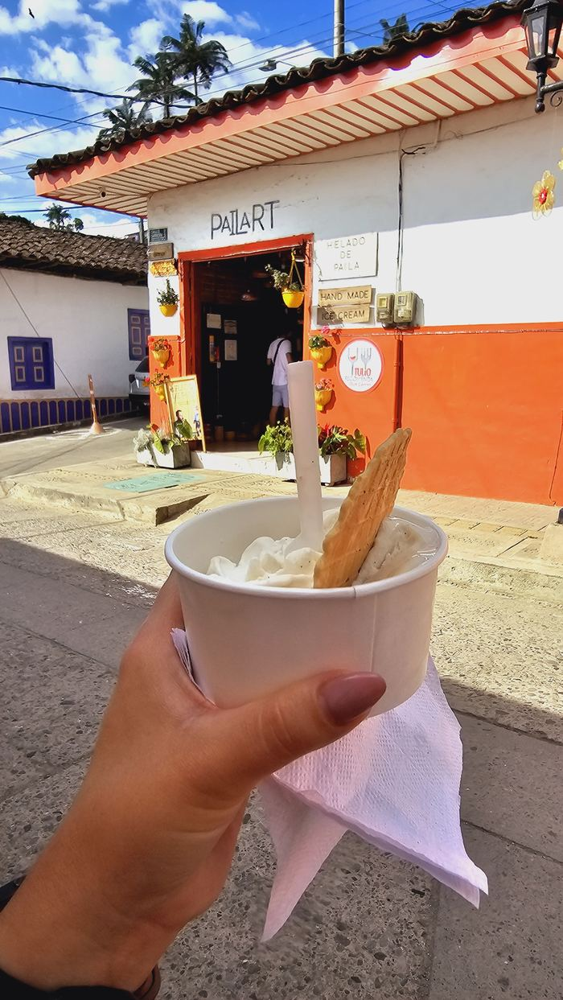
Si quieres más información sobre nuestro Airbnb en Dosquebradas, haz clic aquí.
Haz clic aquíDía 3: Termales, chorizo santarrosano y alta repostería
Después de dos días llenos de caminatas y descubrimiento, el tercer día está pensado para bajar el ritmo. Y no hay mejor manera de cerrar con broche de oro que una mañana de relajación en los Termales de Santa Rosa de Cabal, a 1 hora en auto desde Dosquebradas.

El paisaje los recibe con una cascada de 100 metros que cae fría y estruendosa desde la montaña —una postal preciosa para la cámara—, mientras que a sus pies los esperan las piscinas termales, esas sí de aguas calientes y ricas en minerales, donde realmente se van a sumergir en familia.
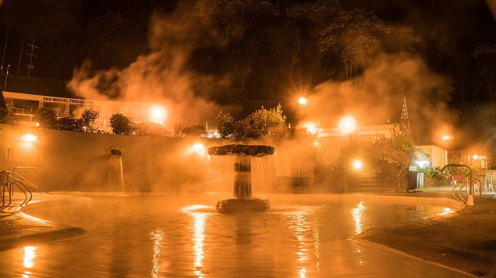
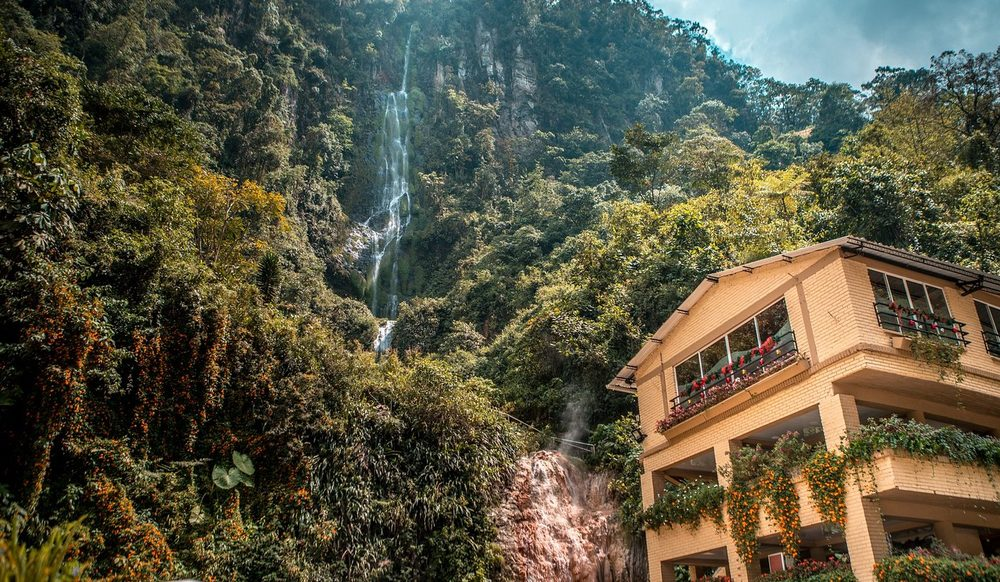
Tip de ahorro: entre semana (lunes a jueves) la entrada cuesta $49.900 COP por adulto y no maneja límite de tiempo por turnos; los fines de semana sube a $60.000 COP y sí aplican turnos de 4 horas. Los niños pagan $35.000 COP cualquier día de la semana. (Estas tarifas son las que aplican para visitantes nacionales; no tenemos confirmado si hay una tarifa distinta para extranjeros, así que les recomendamos confirmarlo al momento de comprar la entrada.) Nuestro consejo de siempre: vayan entre semana en la mañana, así disfrutan las piscinas a su propio ritmo de familia.
No olviden empacar: traje de baño de licra o nailon (es obligatorio para entrar) y un abrigo ligero para el regreso, porque al salir del agua la montaña se pone fría de un momento a otro.
Almuerzo: al bajar de los termales, dos opciones que nunca fallan: Raíces Santarrosanas o el Restaurante Don Lolo, ambos con la gastronomía típica de la zona y el chorizo santarrosano que hizo famoso a este municipio.
La tarde de café: para el ritual de la tarde, elijan entre La Pastelería César Restrepo —con su café de especialidad y sus tortas artesanales, la genovesa de tres leches y la María Luisa son las favoritas de la casa— o el Mirador del Café, con gastronomía creativa, música en vivo y una vista preciosa sobre los cafetales. Cualquiera de las dos es una forma perfecta de cerrar el día.
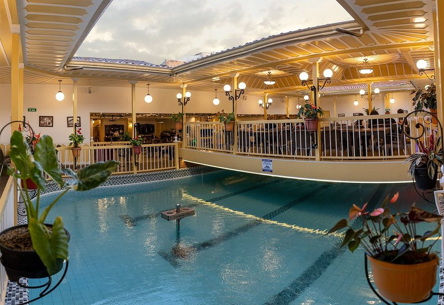
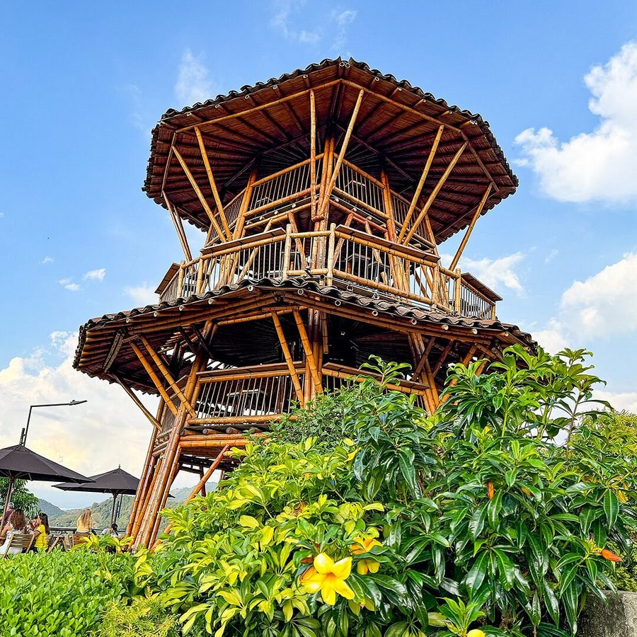
Día 4: Un regreso con calma (o más aventuras)
Después de una mañana entera de relajo en las aguas termales, el último día es para un regreso con calma. Antes de emprender el camino a casa, aprovechen las últimas horas para llevarse un pedazo del Eje Cafetero. En el centro de Pereira pueden visitar la Tienda de Artesanías de Risaralda, con más de 900 productos hechos a mano por 400 artesanos de los 14 municipios del departamento, o Artesanías El Pitufo, ideal para sombreros, ruanas y las clásicas réplicas en miniatura de los jeep Willys. Si buscan algo más pequeño y rápido de conseguir, Shop Sueños de Amor tiene bisutería y recuerdos tradicionales de madera.
Y si el viaje les alcanza para más días, aquí les dejamos otras cuatro joyas de la región:
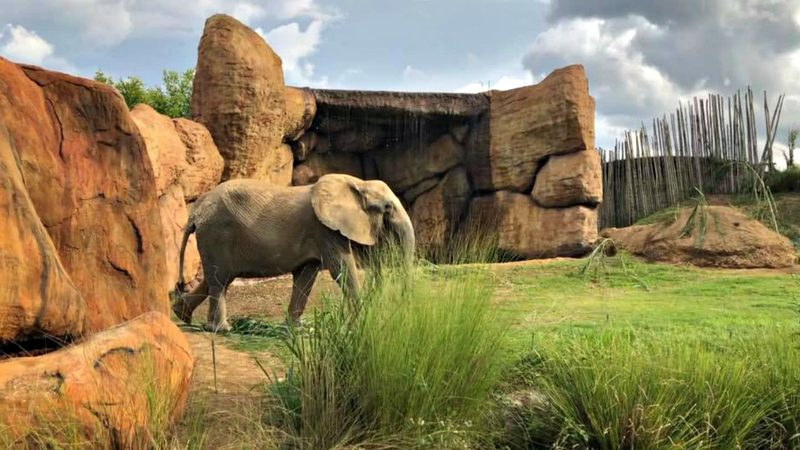
Bioparque Ukumarí (Pereira): el centro de conservación de vida silvestre más moderno del país, con elefantes, rinocerontes y leones en hábitats que recrean la sabana africana y los bosques andinos. Tip de quienes ya fuimos: alquilen un coche infantil en la entrada por $18.000 COP para que los más pequeños no se fatiguen en el recorrido.
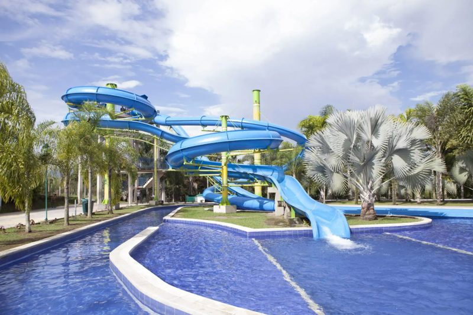
Parque Consotá (Pereira): piscinas de olas, toboganes gigantescos, una granja interactiva y una réplica didáctica de la cultura indígena Quimbaya.
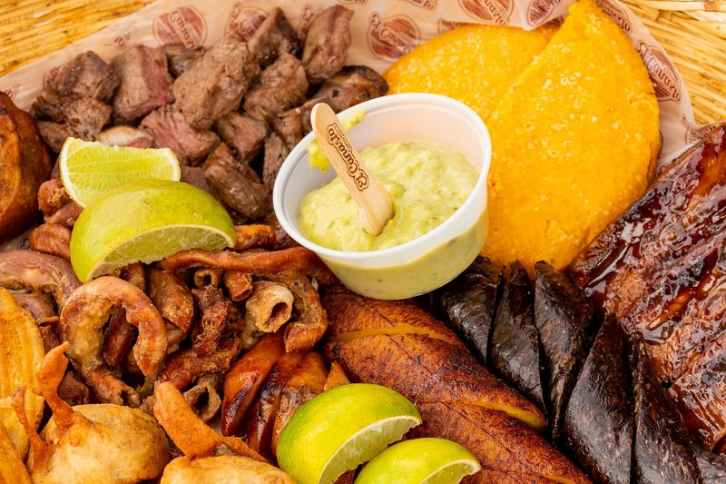
El Canasto Campestre (Cerritos): el restaurante familiar campestre por excelencia, rodeado de zonas verdes y con juegos infantiles donde los niños corren libres mientras los adultos disfrutan de una buena parrilla al aire libre.
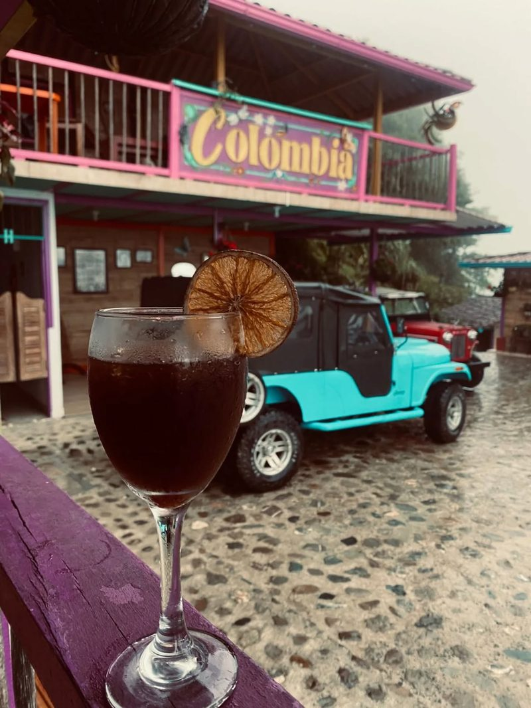
Mirador Café Dos Cosechas (Serranía Alto del Nudo): un balcón de madera en lo alto de la montaña de Dosquebradas, proyecto de jóvenes caficultores locales, con café orgánico cultivado en su propia finca y una panorámica hermosa de Pereira.